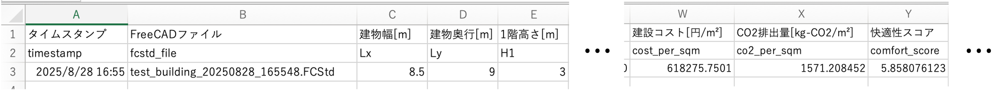
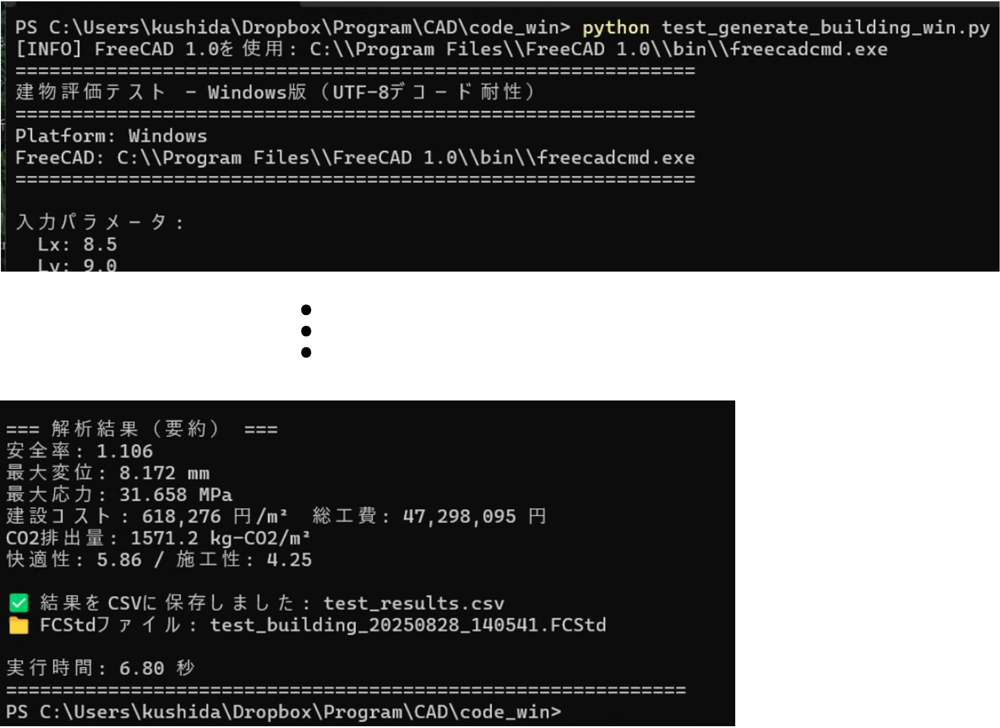

システムの基本理解（フェーズ1）
パラメータ手動調整による性能理解
このフェーズでは，test_generate_building_win.pyを使用して，設計パラメータを一つずつ手動で変更しながら，パラメータ（入力）と建物の性能（出力）の関係を実際に体験し理解します．
test_generate_building_win.pyの全体フロー
- 形状 (14個)
- 材料 (6個)"] end subgraph PROCESS [Process] B["3Dモデル生成 and FEM解析
(generate_building_fem_analyze.py)"] end subgraph OUTPUT [Output] direction LR C["5つの評価指標
(安全性, 経済性, 環境性, 快適性, 施工性)"] D[".FCStdファイル
(建物の3Dモデル)"] end end A -- パラメータを渡す --> B B -- 解析結果 --> C B -- 3Dモデル --> D style A fill:#e8f5e9,stroke:#333,stroke-width:2px style B fill:#e3f2fd,stroke:#333,stroke-width:2px style C fill:#fff3e0,stroke:#333,stroke-width:2px style D fill:#fce4ec,stroke:#333,stroke-width:2px
主な機能と処理の流れ
-
手動でパラメータを変更してFCStdファイルと評価値を出力
-
固定パラメータで建物を生成:
test_generate_building_win.py内にtest_paramsという辞書型変数（48行目）があり，建物の幅・奥行・高さや，柱・壁の厚さ，窓の比率，屋根の形状といった設計パラメータが事前に定義されています．辞書型変数とは：Pythonのデータ構造の一つで，「名前（キー）」と「値」のペアでデータを管理します．
例えば：
test_params = { 'Lx': 8.5, # 'Lx'という名前に8.5という値を対応 'bc': 450, # 'bc'という名前に450という値を対応 'material_roof': 0 # 'material_roof'という名前に0という値を対応 }このように
{ }で囲み，名前: 値の形式でパラメータを定義します．値を変更する際は，該当する数値部分だけを書き換えます． -
FreeCADによる構造解析の実行:
定義されたパラメータをgenerate_building_fem_analyze.pyスクリプトに渡し，外部プロセスとしてFreeCADを起動します．FreeCADがそのパラメータに基づいて建物の3Dモデルを生成し，構造解析（FEM解析）を実行します．📊 技術詳細: FEM解析の詳しい仕組みについては FEM解析システム詳細レポート を参照してください．
-
3Dモデルファイル（.FCStd）の出力:
解析に使用された建物の3Dモデルを，FreeCADで直接開いて確認できる.FCStdファイルとして保存します．ファイルをダブルクリックすることでFreeCADで開くことができ，生成された形状を視覚的に検証できます．
生成される.FCStdファイルの名前は，例えばtest_building_20250813_161902.FCStdのように，実行した年月日時分秒が付与されたものになります．📄 3Dモデルの可視化: FreeCADで開いた3Dモデルに材質別の色を付けて可視化する方法については，FreeCADのマクロ設定.pdf を参照してください．
-
性能評価結果の表示:
解析が完了すると，以下のような多角的な評価指標を計算し，ターミナルに表示します．- 安全性: 安全率，最大変位，最大応力など
- 経済性: 建設コスト（単価・総工費）
- 環境性: CO2排出量
- 快適性: 空間の広がり，採光，プライバシーなどのスコア
- 施工性: 施工しやすさのスコア
⚠️ 注意: FEM解析の安全率などの結果は，同じパラメータでも実行するごとに微妙に異なる値（例：1.106 → 1.108）になることがあります．これはFEM解析の内部処理（メッシュ生成等）で乱数が使用されているためで，正常な動作です．
-
結果をCSVファイルに保存:
入力した設計パラメータ（Lx,Lyなど）と，算出されたすべての評価結果（cost_per_sqmなど）は，test_results.csvというファイルに1行のデータとして追記保存されます．初回実行時はファイル自体が新規作成され，2回目以降は既存ファイルに追記されます．
このCSVファイルには，実行ごとの全パラメータと評価結果が記録されます．具体的には，以下の構造になっています．
- 1行目: 各列の内容を示す日本語名（例：「建物幅
[m]」） - 2行目: プログラム上で使用される変数名（例：
Lx） - 3行目以降: 実行ごとの実データ
timestamp列とfcstd_file列を参照することで，いつ，どの設計案を評価した結果なのかを正確に追跡でき，後の分析に役立ちます． - 1行目: 各列の内容を示す日本語名（例：「建物幅
-
実行例
以下は，ターミナルでスクリプトを実行した際の出力例です．この1枚の画像に，実行コマンドからパラメータ，解析結果，保存されたファイル名まで，すべての情報が含まれています．
code_winフォルダ内で実行：
python test_generate_building_win.py

【演習1】パラメータ変更による性能変化の観察
目的：
この手順の目的は，test_generate_building_win.pyを使い，設計パラメータを1つだけ変更すると，建物の性能評価値がどのように変化するかを観察することです．これにより，「どのパラメータが，どの性能に，どう影響するのか」という因果関係について，定性的な理解を深めます．
使用するファイル：
-
test_generate_building_win.py(パラメータを編集するファイル) -
test_results.csv(実行結果が記録されるファイル)
ステップ1：基準となるデフォルト設計を評価する
まずは，何も変更していない「素の状態」の設計を評価し，これを基準とします．
- ターミナル（コマンドプロンプト）を開きます．
- 以下のコマンドを実行します．
python test_generate_building_win.py - 実行後，ターミナルに表示される5つの評価指標（特に安全率と建設コスト）の数値を確認しましょう．この実行結果は
test_results.csvに自動で記録されるため，これが比較の基準点となります．
ステップ2：1つのパラメータを選んで値を変更する
次に，影響を観察したいパラメータを1つだけ選び，その数値を変更します．ここでは例として，柱の太さを変更してみます．
- エディタで
test_generate_building_win.pyファイルを開きます． - ファイルの48行目にある
test_params = { ... }という記述を探します． 'bc': 450,という行を見つけます．（bcは柱の幅(Breite)を意味します）- この数値を，例えば
450から800に書き換えてみましょう．柱がかなり太くなります．
# 変更前
'bc': 450, # 柱幅 [mm]
'hc': 450, # 柱奥行 [mm]
# 変更後 (例)
'bc': 800, # 柱幅 [mm]
'hc': 800, # 柱奥行 [mm]
bc (幅)と hc (奥行)は，同じ値にして正方形の柱にするのが一般的です．
- 更新したファイルを保存します．
ステップ3：再度評価を実行し、結果を比較する
パラメータを変更した状態で，もう一度設計を評価します．
- ターミナルで，再び同じコマンドを実行します．
python test_generate_building_win.py - 出力された新しい評価指標と，ステップ1で記録された基準値とを比較します．
- 安全率は上がりましたか？下がりましたか？
- 建設コストはどうなりましたか？
- 快適性スコアに変化はありましたか？
ステップ4：色々なパラメータで実験を繰り返す
ステップ2〜3を，他のさまざまなパラメータで試してみましょう．以下に実験の例を挙げます．
-
壁の傾きを変えてみる:
'wall_tilt_angle': -25,の値を0や25に変えると，快適性や施工性はどう変わるでしょうか？
-
屋根の材質を変えてみる:
'material_roof': 0,の値を1に変えてみましょう．（0:コンクリート, 1:木材）- CO2排出量や建設コストにどのような影響があるでしょうか？
-
2階の窓を大きくしてみる:
'window_ratio_2f': 0.7,の値を0.9(最大)や0.1(最小)にすると，快適性はどうなるでしょうか？
ステップ5：結果を一覧で確認する
これまでの実験結果は，すべてtest_results.csvファイルに自動で記録されています．
このファイルをExcelやGoogleスプレッドシートで開くと，変更したパラメータと，それによって変化した評価値を一覧で比較・分析することができます．
【演習2】設計パラメータと建物性能の関係理解
課題：
安全率2.0以上を維持しながら，建設コストをできるだけ小さくする設計パラメータの組み合わせを探してみましょう．
この手動での試行錯誤を通じて，最適化の難しさとトレードオフの関係（安全性 vs コスト）を実感できます．